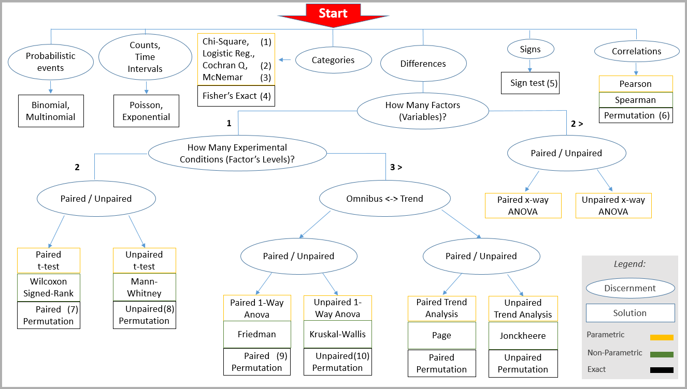

Chose a test
The scheme below can help finding the appropriate hypothesis test giving the problem at hand.
Navigate from "Start" following the appropriate ellipses for your problem to find the solution in the rectangles. The tests that are available in this package are numbered within parentheses and listed in the table below.
Remark that the kind of tests referred to as independent samples and repeated measures throughout this documentation are referred to in the schame as unpaired and paired, respectively. Those terms are synonimous.

| Univariate tests | Multiple comparisons tests | |
|---|---|---|
| (1) | chiSquaredTest | chiSquaredMcTest |
| (2) | cochranqTest | cochranqMcTest |
| (3) | mcNemarTest | mcNemarMcTest |
| (4) | mcNemarTest | mcNemarMcTest |
| (5) | signTest | signMcTest |
| (6) | correlationTest | correlationMcTest |
| (7) | studentTestRM | studentMcTestRM |
| (8) | studentTestIS | studentMcTestIS |
| (9) | anovaTestRM | anovaMcTestRM |
| (10) | anovaTestIS | anovaMcTestIS |
For more available tests, see univariate tests and multiple comparisons tests.